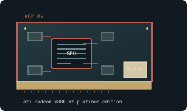

[ AGP-ERA GRAPHICS CARDS // IDENTIFIED COMPONENT ]
ATI Radeon X800 XT Platinum Edition 256 MB AGP
R420 / Radeon X800 XT PE, 2004. This entry describes one identifiable model or reference configuration; related products and OEM variants are distinguished below.

MODEL / VARIANT: AGP Platinum Edition is distinct from PCIe X800 XT PE, X800 XT, and X800 Pro. Partner outputs/coolers and power vary.
Recorded specifications
| Cataloged product | ATI Radeon X800 XT Platinum Edition 256 MB AGP |
|---|---|
| Generation / core | R420 / Radeon X800 XT PE, 2004 |
| Core & memory | R420; 16 pixel pipelines and 6 vertex engines; 256 MB GDDR3 on 256-bit bus; 520 MHz core and 560 MHz memory clock (1.12 GHz effective). |
| Host interface & I/O | AGP 8x; typical reference DVI-I, VGA, S-Video and auxiliary power; check exact PCB for plug and panel. |
| Variant boundary | AGP Platinum Edition is distinct from PCIe X800 XT PE, X800 XT, and X800 Pro. Partner outputs/coolers and power vary. |
| Archival identification | Record complete part number, PCB revision, BIOS/firmware, device/subsystem IDs, driver version, adapters, condition, and source-document edition. |
Compatibility, service & archival notes
R420 reference clocks/layout do not universally apply to partner boards or PCIe X800 XT PE.
Identify AGP model and VBIOS; inspect power input, fan and capacitors. Preserve Catalyst legacy driver and any display adapters.
- Check signaling, slot keying, lane width, power pinout, board length, case clearance, airflow, and PSU requirements for the exact item.
- Use drivers for the device ID and target OS; preserve installer/firmware copies and record their source before updates.
- Do not power hardware with corrosion, cracks, damaged connectors, obstructed cooling, or suspected shorts; document condition before bench testing.
Manufacturer, model & standards sources
- ATI Radeon X800 legacy support archiveModel-specific product or interface reference; compare with the physical label and exact board revision.
- Radeon X800 XT Platinum Edition AGP specificationsModel-specific product or interface reference; compare with the physical label and exact board revision.
- Intel AGP specification archiveModel-specific product or interface reference; compare with the physical label and exact board revision.
Reference specifications do not supersede the board vendor manual and nameplate. Performance figures are vendor claims unless identified as measured results.